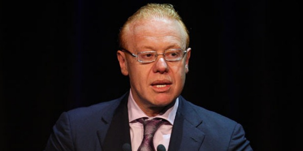

Born in 1960, Anthony Pratt serves as the global chairman for Pratt or Visy Industries, one of the biggest privately owned paper, packaging and recycling businesses in the world. His father, Richard Pratt, was a magnate in the manufacturing industry, and also the president of Carlton Football Club, and his mother, Jeanne Pratt AC, was a philanthropist. In 2015, BRW Rich 200 accesses his family net worth for A$10.8 billion, making them the second wealthiest family in the country. Forbes Asia assessed the net worth of Anthony alone for US$ 3.5 billion, enlisting him among the 50 wealthiest people in Australia.
Pratt completed his Bachelor of Economics honors degree in 1983 from Monash University, after which he joined McKinsey & Co, a consulting firm. After that, he became the joint general manager in the Visy Board of Visy. In 1988, he joined Pratt Industries as a Deputy Chairman, and took over as the company’s CEO and Chairman after his father’s death in 2009.
In 1991, Anthony entered United States to expand his company there, during which he acquired many corrugated companies which are still a major part of Pratt. Since then, company’s earnings and sales have increased manifolds, and has more than 3000 employers at its box plans and mills all over the US. Pratt Industries is known as Visy in USA, and the number of their American employees is more than those employed at any other Australian business. Pratt Industries entered in the US with only US$100 million, and now the revenue is worth US$1 billion.